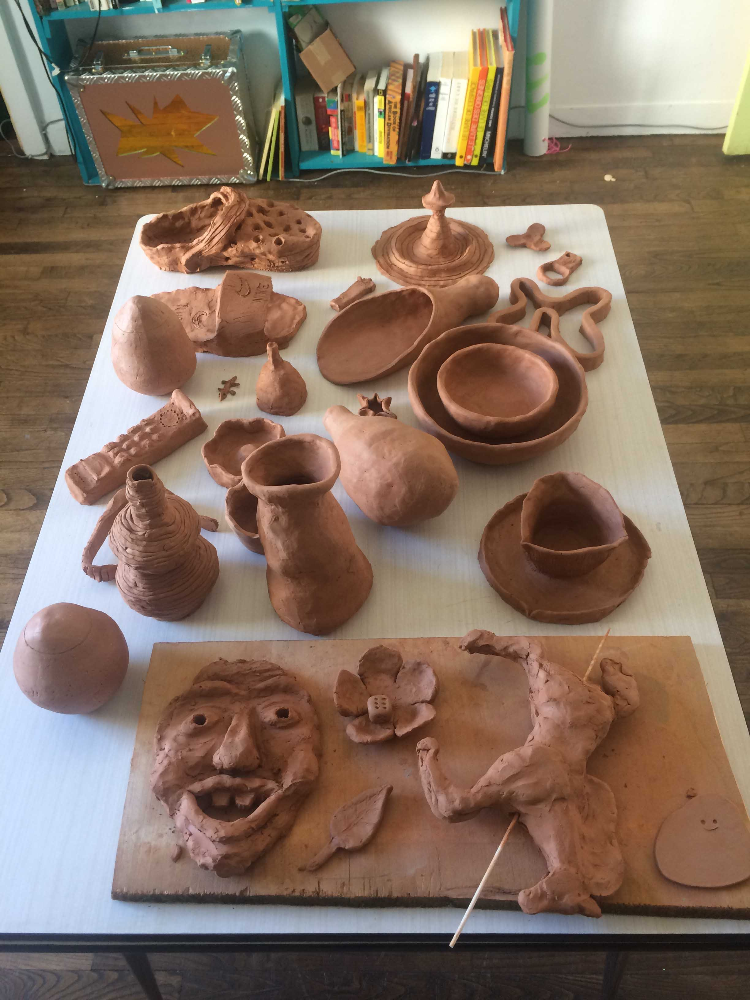
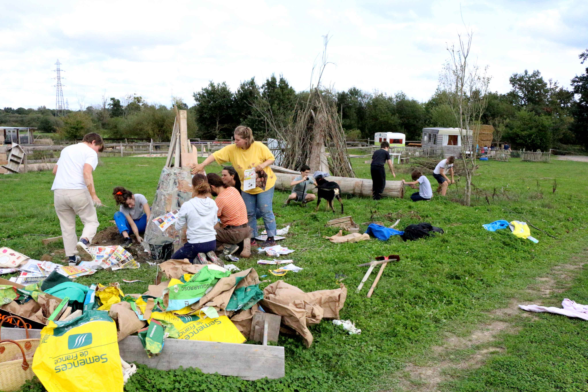
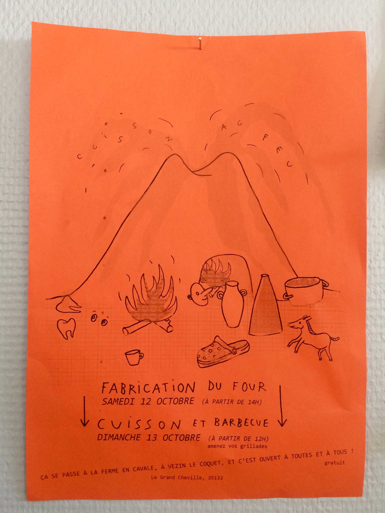

Durant l’été 2019, j’ai proposé à des ami·e·s une initiation à la pratique du modelage de l’argile. Ces créations étaient destinées à être cuites toutes ensemble dans un four papier que nous allions construire. Un four éphémère construit à partir de planches de bois et de papier glacé enrobé d’argile.
L’idée était d’initier un mouvement de création collective ayant pour but d’expérimenter une manière simple de cuire de la terre à haute température (900°).
La cuisson a eu lieu début octobre 2019, le four a été construit collectivement le samedi et a brûlé entièrement le dimanche entre 10h et 20h. Le lundi matin quand les cendres avaient bien refroidies, nous sommes aller collecter les sculptures cuites.
During summer 2019, I offered friends an introduction to the clay modeling practice. These creations were intended to be cooked all together in a paperkiln that we were going to build. A paper kiln is a temporary oven built from wooden planks and glazed coated paper.
The idea was to initiate a collective movement of creation with the aim of experimenting a simple way of fireing clay at high temperature (900 °).
The firing took place in early October 2019, the oven was built collectively on saturday and burned entirely on sunday, between 10 a.m. and 8 p.m. Monday morning when the ashes had cooled, we went to collect the sculptures.

Les sculptures créée par les différents étudiants de l'été. Sculptures made by the students during the summer.

Construction collective du four sur le terrain de la Ferme en cavale à Rennes, octobre 2019,
photo Morgane Joanin. Collective construction of the paper kiln on the field of a farm in Rennes.

La cuisson était un évènement ouvert au public, affiche dessinée par Fanny Alizon. The firing was an event open to the public, poster designed by Fanny Alizon.